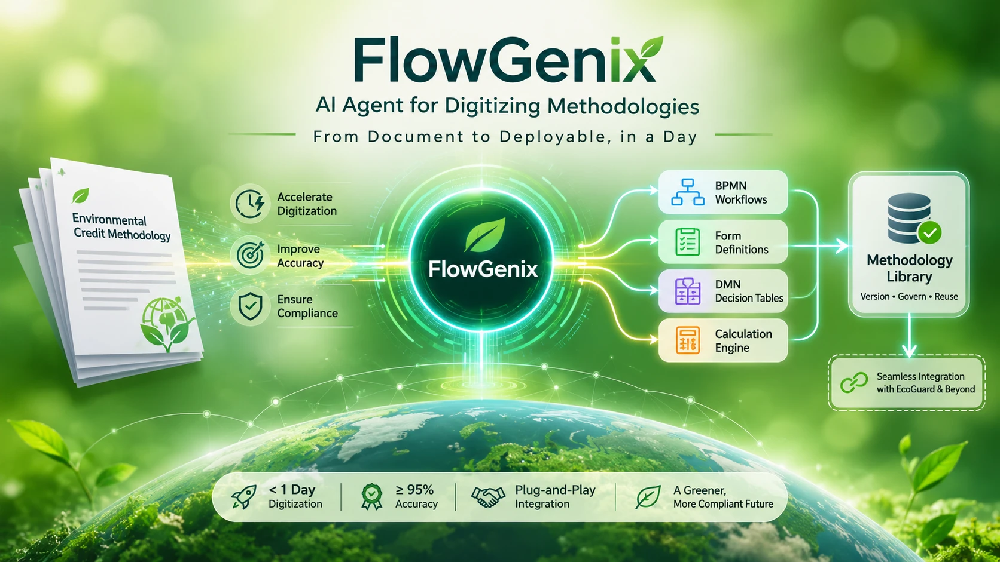

Flowgenix-AI
A multi-agent GenAI system that turns carbon methodology documents into workflows.
- Before a carbon methodology could go live on a registry, subject-matter experts had to translate a long methodology PDF into workflows, forms, eligibility rules and formulas by hand.
- It took 4–5 months per methodology, which made onboarding the bottleneck for growth in carbon markets.
- Split the job across specialist agents instead of one general prompt: a parser builds a structured document model, then generators produce BPMN, forms, validation rules, DMN and calculation logic.
- Added human-in-the-loop checkpoints between phases so experts review the output instead of authoring it, keeping trust and accuracy where they matter.
- Methodology processing dropped from 4–5 months to 1–2 days, about 98% faster.
- The expert's role moved from writing every artifact to reviewing what the agents produce, which speeds up carbon-market onboarding on EcoGuard.

~98%faster processing
8agents, with human-in-the-loop checkpoints